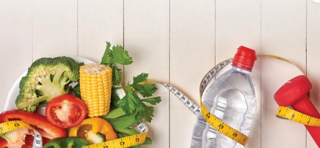
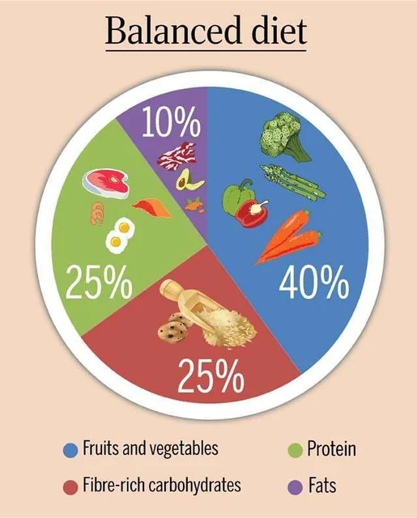
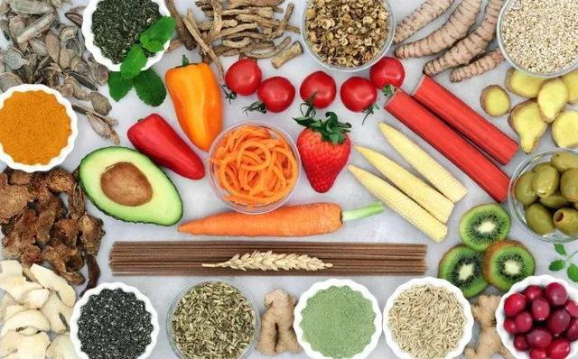
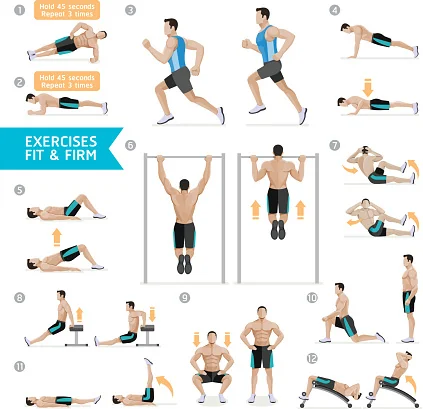
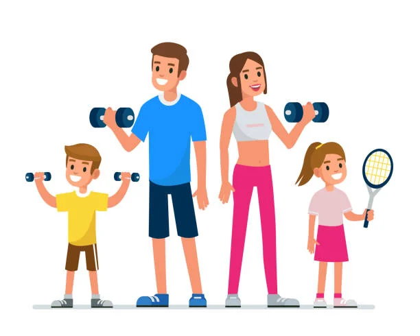

A healthy
lifestyle
Lesson 1 — Getting started
- 🏃 Move
- 🥗 Eat well
- 😴 Sleep
Five stops in 45 minutes
- 🎭
Guess the words
Mime game · two teams
5 min - 📚
New words
Ten words and phrases
7 min - 🎧
Listen & read
Mark and Nam · Tasks 1–4
20 min - 👴
Role-play
Grandpa’s healthy-life secrets
10 min - ✅
Wrap-up
Exit ticket + homework
3 min
By the end of this lesson, you will be able to…
- 🗣️
Knowledge
Use words about a healthy lifestyle; notice the past simple and the present perfect in a real conversation.
- 🤝
Competences
Communicate and be creative; work well in pairs and teams.
- ❤️
Personal qualities
Know how to keep fit and stay healthy; build self-study habits.
Warm-up
Guess the words
5 minutesSports & health — act it out!
- 👥
1. Two teams
Each team sends ONE player to the front.
- 🤫
2. Mime it
The player sees a word and acts it out. No speaking, spelling or writing!
- 🏆
3. Guess!
Correct guess = 1 point. Change players after each round.
Eight words to mime
Show the word to the players only, then flip it here.
- 1 run
- 2 swim
- 3 cycle
- 4 exercise
- 5 sleep
- 6 vegetables
- 7 water
- 8 fast food
New words
Look · listen · repeat
7 minutes




Say the word — books closed!
1. to stop doing or having something → give up
2. to go to bed later than usual → stay up late
3. to exercise to get stronger and fitter → work out
4. the food and drink a person usually has → diet
5. healthy and strong because of exercise → fit
Practice
Mark and Nam · Tasks 1–4, pages 8–9
20 minutesA healthy lifestyle
- 🔮
Before
Look at the title. What healthy changes do you think Nam has made?
- ✏️
While
Listen and follow. Underline the healthy habits you hear.
- 💬
After
Compare with a partner. Who inspired Nam to change?
A healthy lifestyle · 1–2
A healthy lifestyle · 3
A healthy lifestyle · 4
A healthy lifestyle · 5–6
A healthy lifestyle · 7–8
A healthy lifestyle · 9–10
A healthy lifestyle · 11–12
A healthy lifestyle · 12
Compare with a partner
Who inspired Nam to change his lifestyle? His grandfather — 90 years old and still full of energy.
Which healthy habits did you underline?
- working out
- no fast food
- no staying up late
- fresh fruits and vegetables
- exercise every morning
- go to bed early
- a balanced diet
Read the conversation again · 1–2
- Nam has always had healthy habits. FALSE He ate a lot of fast food and stayed up late.
- He has learnt the importance of exercise and healthy food. TRUE Regular exercise + a balanced diet = the key to a long life.
Read the conversation again · 3
- Nam’s grandfather goes to sleep early, exercises every day, and eats healthily. TRUE He exercises every morning, goes to bed early and eats a lot of vegetables.
Complete the phrases from Task 1
1. full of energy — having the strength and enthusiasm we need for physical or mental activity
2. bad habits — things we often do that are not good for our health
3. regular exercise — activity we do frequently to stay healthy
4. balanced diet — the correct types and amounts of food we need
Use each phrase in a sentence
full of energy After a good night’s sleep, I feel full of energy.
bad habits Eating too much fast food can become a bad habit.
regular exercise Regular exercise helps us stay fit.
balanced diet A balanced diet includes different food groups.
Complete the text
In the past, Nam (1. eat) ate fast food and often stayed up late. But he (2. start) has started eating healthy food and (3. give) (has) given up bad habits. He has changed his lifestyle since he (4. visit) visited his grandfather, who (5. just, celebrate) has just celebrated his 90th birthday.
Finished past or connected to now?
Past simple
A finished action at a finished time.
In the past, Nam ate fast food.
He visited his grandfather last summer.
Present perfect
A past action connected to now.
He has started eating healthy food.
His grandfather has just celebrated his 90th birthday.
Role-play
Grandpa’s healthy-life secrets
10 minutesGrandpa’s healthy-life secrets
- 👴
1 student
Grandpa or Grandma — in their 90s and still fit and healthy.
- 🧒
3 students
Grandchildren asking for advice.
- ⏱️
Timing
Prepare 3 min · perform 2 min.
Goal
Grandpa gives at least three pieces of healthy-lifestyle advice.
Ask Grandpa
- 💪
How do you stay so fit?
- 🍲
What do you usually eat?
- 🚫
What habits should we give up?
- 💡
What advice can you give us?
- work out
- give up bad habits
- stay up late
- full of energy
- balanced diet
- fit
Before you leave, tell your partner…
- 1️⃣
One word
A new word or phrase you remember.
- 2️⃣
One idea
One habit for a long and healthy life.
- 3️⃣
One sentence
Use the past simple or the present perfect.
Homework
1. Do the Getting started exercises in the workbook.
2. Write a short paragraph about how to keep fit and stay healthy.
3. Prepare materials for the Unit 1 project in Lesson 8.
4. Get ready for Lesson 2 — Language.